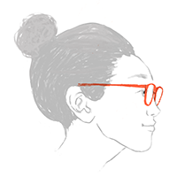

ホームページ作成、承ります。
伝えたい人へ、伝えたいことを、分かりやすくお伝えする
お手伝いをしています。
ABOUT
Saori HARAGUCHI
- 東京都在住。植物と猫が好き。趣味はテニスとイラスト制作。
- 2024年よりフリーランスとしてWebサイト制作を開始しました。
- シンプルで運用しやすいWebサイト制作を心がけています。
- 知的財産管理技能検定2級
- WinActorRPA認定技術者エキスパート
- 色彩検定2級 / カラーコーディネーター検定2級（改訂前）
- 【使用スキル】
- Adobe Photoshop / Illustrator / Adobe XD
- HTML / CSS
- JavaScript / jQuery
- WordPress
WORKS
CONTACT
お問い合わせは、こちらのメールアドレスかSNSよりお願いいたします。